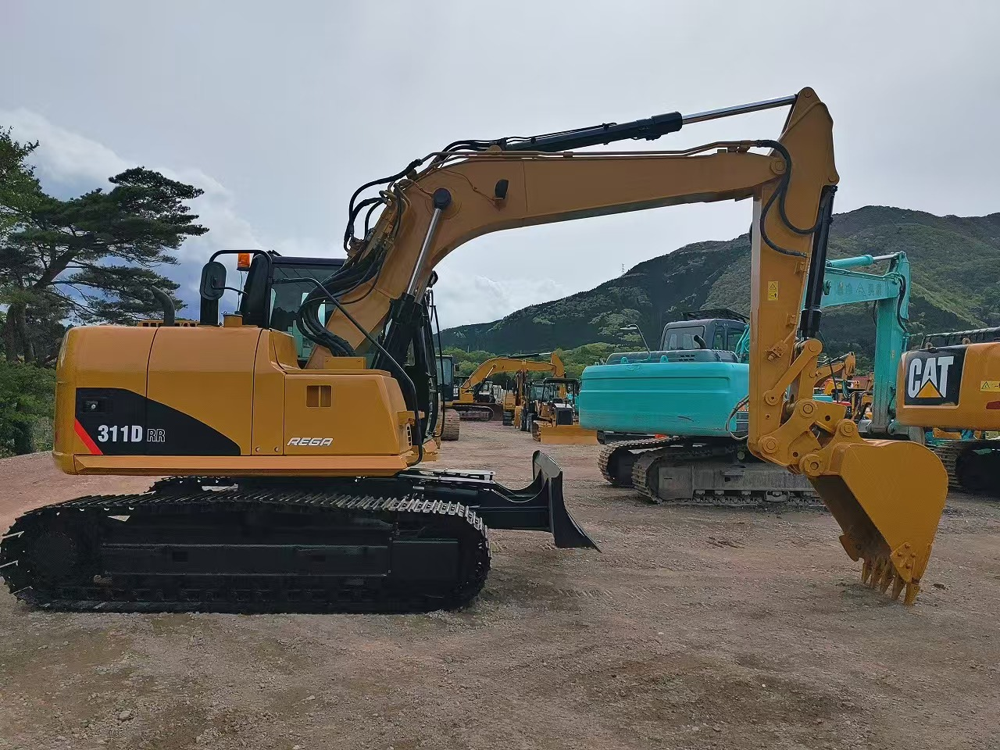

Refurbished Caterpillar Cat 311 Excavator
The Caterpillar Cat 311 Excavator is a compact yet powerful machine designed for various applications in construction, landscaping, and utility projects. Known for its excellent maneuverability, strong hydraulic capabilities, and fuel-efficient engine, the Cat 311 is a reliable choice for contractors who need a versatile and high-performance machine for small to medium-sized projects. When refurbished, the Cat 311 provides all the performance benefits of a new model but at a more affordable price, making it a smart investment for businesses looking to save on equipment costs while maintaining excellent productivity.
Honestly, it's almost impossible to buy a brand new excavator from China. They either don't exist or are made in China. If a Chinese seller tells you their Caterpillar/Komatsu/Volvo/Kobelco/Hitachi is brand new, they're lying. Therefore, a refurbished excavator is your best bet.

Service Introduction
Here are the detailed specifications for a refurbished Caterpillar Cat 311 excavator, ideal for your technical documentation and comparative analysis:
Operating Weight and Dimensions
- Operating Weight: ~11,400–11,500 kg (25,100 lbs)
- Transport Length: ~7.25 meters (23 ft 9 in)
- Transport Width: ~2.49 meters (8 ft 2 in)
- Transport Height: ~2.77 meters (9 ft 1 in)
- Tail Swing Radius: ~2.3–2.5 meters
- Track Width: 500 mm standard
Engine and Powertrain
- Engine Model: Cat 3064T (Turbocharged, Tier 2 compliant)
- Rated Power Output: ~62–67 kW (83–90 hp) @ 2,200 rpm
- Fuel Tank Capacity: ~250 liters
- Travel Speed: 3.0–5.0 km/h
- Swing Speed: ~11 rpm
- Drive Type: Hydrostatic with planetary final drives
Hydraulic System
- Pump Type: Load-sensing, variable displacement piston pumps
- Flow Rate: ~2 × 180–200 L/min
- System Pressure: Up to 31.5 MPa
- Hydraulic Oil Capacity: ~200–250 liters
- Efficiency Features:
- Boom/swing priority
- Regeneration circuits
- Auto hydraulic warm-up
Performance Metrics
- Bucket Capacity: 0.5–0.7 m³ (SAE heaped)
- Max Digging Depth: ~5.5–5.8 meters
- Max Reach (Horizontal): ~8.5–9.0 meters
- Max Dump Height: ~5.6–5.8 meters
- Bucket Digging Force: ~95–105 kN
- Arm Digging Force: ~70–80 kN
Cab and Operator Features
- Cab Type: ROPS-certified enclosed cab
- Display: Analog gauges or basic LCD monitor
- Controls: Pilot-operated joysticks with auxiliary hydraulic circuit
- Comfort: Adjustable seat, optional HVAC
- Visibility: Wide glass area, LED work lights
Smart Features and Efficiency
- Fuel Efficiency:
- Mechanical fuel injection
- Auto idle and engine shutdown
- Emissions Control: Tier 2 compliant (no DPF/SCR)
- Transportability: Easily trailerable under 12-ton class
Attachments Compatibility
- Standard Bucket: 0.5–0.7 m³
- Optional Tools: Hydraulic breaker, auger, compactor, ripper
- Quick Coupler: Manual or hydraulic options available
Refurbishment Scope
Refurbished Cat 311 units typically include:
- Engine Overhaul: Turbocharger, injectors, cooling system
- Hydraulic Restoration: Pump recalibration, valve block testing, hose replacement
- Electrical Diagnostics: Monitor, sensors, wiring harness
- Cab Reconditioning: Seat, joysticks, HVAC, repainting
- Structural Repairs: Boom/bucket welding, bushing replacement, undercarriage rebuild
Overview of the Caterpillar Cat 311 Excavator
The Caterpillar Cat 311 is a small-to-mid-sized, tracked hydraulic excavator that delivers excellent performance in tight spaces and on compact worksites. This compact machine is highly efficient in performing tasks such as trenching, excavation, material handling, and even demolition. Its lightweight design, combined with powerful hydraulic systems and a fuel-efficient engine, makes it the perfect tool for contractors working on smaller jobs or in confined spaces where larger machines would struggle.
Refurbished Cat 311 excavators undergo a thorough reconditioning process, where critical components are inspected and replaced to ensure that the machine operates like new. This ensures you get the same high-level performance and longevity of a new unit, with a more affordable price tag.
Key Specifications of the Caterpillar Cat 311 Excavator
The Caterpillar Cat 311 comes equipped with a variety of features and specifications that make it an ideal choice for a range of tasks:
-
Operating Weight: Approximately 7,500 - 8,500 kg (16,500 - 18,700 lbs)
-
Engine Power: 55 - 75 hp (41 - 56 kW)
-
Max Digging Depth: Up to 5.3 meters (17.4 feet)
-
Maximum Reach: 7.4 meters (24.3 feet)
-
Bucket Capacity: Typically 0.3 - 0.6 cubic meters (10 - 21 cubic feet)
-
Fuel Tank Capacity: 120 - 150 liters (31 - 40 gallons)
-
Travel Speed: 5.5 km/h (3.4 mph)
These specifications make the Cat 311 versatile enough to handle a wide variety of tasks, from trenching and digging to lifting and material handling.
Performance and Efficiency of the Cat 311
The Caterpillar Cat 311 Excavator is engineered for exceptional performance with a focus on fuel efficiency, smooth operation, and precise control. It combines a compact design with a powerful hydraulic system, making it ideal for working in tight spaces or performing delicate tasks.
Performance Highlights:
-
Powerful Hydraulics: The Cat 311 is equipped with an efficient hydraulic system that enables precise control over the boom, arm, and bucket. This system allows operators to perform quick cycle times, which enhances productivity on demanding tasks.
-
Fuel Efficiency: The Cat 311's engine is designed to reduce fuel consumption without compromising performance. Its fuel-efficient design not only reduces operational costs but also increases worksite efficiency by allowing for longer working hours on a single tank of fuel.
-
Digging and Lifting Power: Despite its compact size, the Cat 311 offers impressive digging depth and reach. The powerful hydraulic system enables it to handle tough digging and lifting jobs, including trenching, foundation digging, and material handling.
-
Precision Control: Operators can enjoy smooth and responsive control, making it easy to work in confined spaces or tackle complex tasks that require high precision. The Cat 311's responsive controls enable operators to carry out delicate tasks such as grading or lifting with ease.
Durability and Longevity of the Cat 311
Caterpillar machinery is synonymous with durability and longevity, and the Cat 311 is no exception. Designed to withstand tough conditions and heavy workloads, the Cat 311 can handle a variety of tasks without sacrificing performance or reliability.
Durability Features:
-
Reinforced Undercarriage: The Cat 311 features a robust undercarriage built to handle rough and uneven terrains. The tracks, rollers, and sprockets are durable, reducing the risk of wear and ensuring long-lasting performance on demanding job sites.
-
Long-Lasting Engine: Powered by a reliable engine, the Cat 311 is designed to deliver years of dependable service. With regular maintenance, the engine can provide thousands of hours of operational efficiency, making it a reliable investment for businesses in need of a dependable machine.
-
Hydraulic System Durability: The Cat 311’s hydraulic system is built to withstand high-pressure environments and frequent use. Its components are designed for long-term performance, reducing the likelihood of unexpected hydraulic failures.
Comfort and Safety of the Cat 311
Operator comfort and safety are top priorities for Caterpillar, and the Cat 311 is designed to deliver both. The spacious, ergonomic operator cabin ensures maximum comfort for long hours of operation, while the safety features protect operators in hazardous conditions.
Comfort and Safety Features:
-
Spacious and Ergonomic Cabin: The Cat 311 features a well-designed operator cabin with adjustable seating and intuitive controls. The cabin is spacious, providing a comfortable working environment that helps reduce fatigue during long shifts.
-
Noise and Vibration Reduction: Designed to minimize noise and vibration, the cabin helps create a quieter and more comfortable space for operators. This feature is essential for improving focus and efficiency, especially during extended work hours.
-
Safety Features: The Cat 311 is equipped with Roll Over Protection (ROPS) and Falling Object Protection (FOPS) to safeguard operators from accidents. The machine’s stable and sturdy design enhances safety when working on uneven surfaces.
Versatility and Attachments for the Cat 311
The Cat 311 can be equipped with a range of attachments to enhance its functionality and make it adaptable to various tasks. Whether you need to dig, lift, break, or handle materials, the Cat 311 is versatile enough to tackle a variety of jobs.
Common Attachments for the Cat 311:
-
Buckets: The Cat 311 can be fitted with a variety of buckets, including general-purpose, heavy-duty, or grading buckets. These buckets are available in capacities ranging from 0.3 - 0.6 cubic meters (10 - 21 cubic feet) for efficient material handling.
-
Hydraulic Breakers: For demolition tasks, the Cat 311 can be equipped with hydraulic breakers, allowing operators to break through concrete, rock, and other hard materials with ease.
-
Augers: Auger attachments can be used for digging precise holes for foundations, posts, or other applications that require deep and narrow holes.
-
Grapples: Grapple attachments are ideal for material handling, allowing the Cat 311 to efficiently lift and transport logs, scrap metal, and other debris.
-
Quick Couplers: Quick couplers enable operators to quickly change attachments without wasting time, improving overall job site productivity.
Benefits of Purchasing a Refurbished Caterpillar Cat 311 Excavator
Opting for a refurbished Cat 311 offers several advantages, especially for businesses that need to manage their budgets efficiently without sacrificing quality or performance.
Key Benefits:
-
Cost Savings: Refurbished Cat 311 excavators are significantly more affordable than new models, providing the same level of performance without the high price tag. This allows businesses to get the equipment they need without breaking the bank.
-
Thorough Reconditioning: Each refurbished Cat 311 undergoes a comprehensive inspection and reconditioning process, where all worn parts are replaced with genuine Caterpillar components. This ensures that the machine is in excellent working condition.
-
Warranty: Many refurbished models come with a warranty, offering buyers peace of mind that their investment is protected. This warranty provides coverage against unexpected mechanical issues, ensuring that the machine will continue to perform reliably.
-
Environmental Impact: Purchasing refurbished equipment is an environmentally responsible choice. It helps reduce waste by extending the life of existing machinery, contributing to sustainability in the heavy equipment industry.
Maintenance Tips for the Caterpillar Cat 311 Excavator
To maximize the lifespan and performance of the Cat 311, regular maintenance is essential. Following a proactive maintenance schedule helps prevent breakdowns and ensures optimal efficiency.
Maintenance Recommendations:
-
Engine Maintenance: Regularly check and replace engine oil, air filters, and coolant to prevent overheating and maintain smooth engine operation.
-
Hydraulic System: Inspect hydraulic hoses for signs of leaks and replace hydraulic filters as necessary. Keeping the hydraulic system in top shape is critical for ensuring consistent and efficient performance.
-
Undercarriage: Regularly inspect the undercarriage for wear, especially the tracks, sprockets, and rollers. Replacing damaged components promptly helps maintain operational efficiency and prevents further damage.
-
Attachments: Regularly inspect buckets, grapples, and other attachments for wear. Replace or repair damaged components to ensure reliable attachment functionality.
Conclusion
The Caterpillar Cat 311 Excavator is a compact yet powerful machine that offers excellent performance, fuel efficiency, and durability. A refurbished Cat 311 provides a cost-effective alternative to purchasing new equipment, while still delivering high-quality performance and reliability. By following proper maintenance procedures, businesses can ensure that the Cat 311 continues to perform efficiently for years to come. Whether you're working in construction, landscaping, or demolition, the Cat 311 is a versatile, reliable, and cost-effective solution for your heavy equipment needs.
Our Commitment
- 2 years / 4000 hours warranty.
- EPA certified.
- No sweatshop labor.
Contacts

- [email protected]
- Youtube Instagram Facebook
- Navigation: G206 (Sishu Bridge) in Changfeng County, Hefei City, Anhui Province, 200 meters north to the east